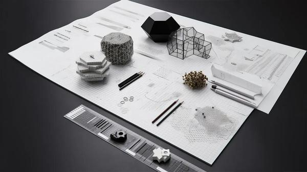

3D Printing and MedTech in Space
View live original ↗ · Hawk Ridge Systems

3D printed hearts, livers, kidneys and more. Sounds like something out of a sci-fi story, but it’s real, and it’s happening aboard the ISS.
In November of 2022, researchers continued 3D printing of human tissue (bioprinting) tests on the International Space Station (ISS). Printing in space eliminates the issue of tissue collapse due to gravity, making it ideal for bioprinting.
Published on hawkridgesys.com, October 18, 2023. Featured on Journoportfolio.